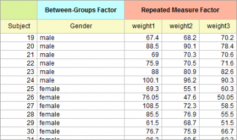
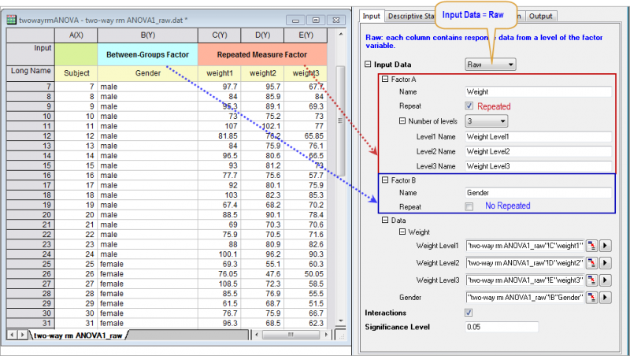
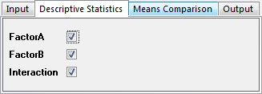
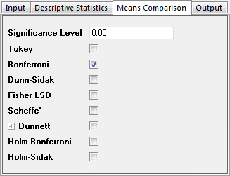
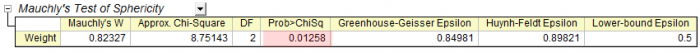
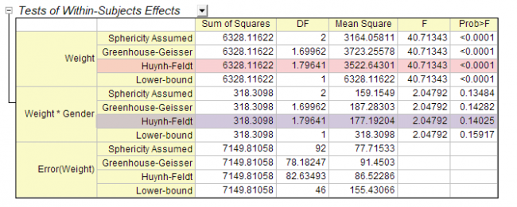
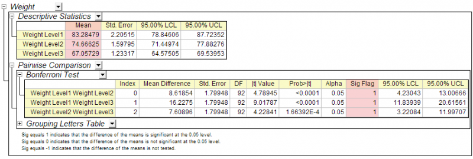
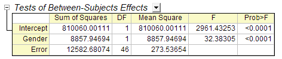
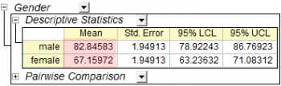

Zweifache ANOVA mit gemischtem Design
2Way-Mixed-Design-ANOVA
Zusammenfassung
Die zweifache ANOVA mit gemischtem Design ist auch unter dem Namen zweifaches Split-Plot-Design (SPANOVA) bekannt. Es handelt sich hierbei um eine ANOVA eines Faktors mit wiederholten Messungen und einem Faktor zwischen den Gruppen.
Origin-Version mind. erforderlich: 2016 SR0
Was Sie lernen werden
Dieses Tutorial zeigt Ihnen, wie Sie:
- die zweifache ANOVA mit gemischtem Design durchführen,
- die Ergebnisse der zweifachen ANOVA mit gemischtem Design interpretieren.
Anwenderbericht
Ein Forscher möchte wissen, ob eine Behandlung Menschen beim Abnehmen helfen kann. Es nehmen 48 Personen (24 männlich) an der Untersuchung teil. Die Forscher zeichneten ihre Gewichte alle drei Monate während des Behandlungsprogramms auf.
Analysedaten vorbereiten
Um die zweifache ANOVA mit gemischtem Design durchzuführen, werden die Daten wie unten angeordnet.
- 
| Hinweise: Die Daten können auch im Indexmodus für die zweifache ANOVA mit gemischtem Design angeordnet werden. Daten für den Indexmodus dieses Tutorials finden Sie unter den Beispieldaten in \Samples\Statistics\ANOVA\two-way rm ANOVA1_indexed.dat. |
Zweifache ANOVA mit gemischtem Design durchführen
- Öffnen Sie ein neues Projekt oder eine neue Arbeitsmappe. Importieren Sie die Datendatei \Samples\Statistics\ANOVA\two-way rm ANOVA1_raw.dat.
- Wählen Sie Statistik: ANOVA: Zweifache ANOVA mit wiederholten Messungen im Origin-Menü.
- Wählen Sie im geöffneten Dialog die Registerkarte Eingabe.
- Setzen Sie die Eingabedaten auf Roh.
- Erweitern Sie den Zweig Faktor A, ändern Sie den Namen in Gewicht und setzen Sie die Anzahl der Stufen auf 3. Erweitern Sie den Zweig Faktor B, ändern Sie den Namen in Geschlecht und deaktivieren Sie das Kontrollkästchen Wiederholen.
- Setzen Sie im Zweig Daten die Spalten C, D und E auf Gewicht Stufe1, Gewicht Stufe2 bzw. Gewicht Stufe3 und die Spalte B auf Geschlecht.
- Aktivieren Sie das Kontrollkästchen Wechselwirkungen.
- 
- Wählen Sie die Registerkarte Deskriptive Statistik. Aktivieren Sie alle Kontrollkästchen.
- 
- Wählen Sie die Registerkarte Mittelwertevergleich und aktivieren Sie das Kontrollkästchen Bonferroni.
- 
- Klicken Sie auf OK, um die Analyse durchzuführen.
Ergebnisse interpretieren
Wechseln Sie zum Arbeitsblatt ANOVATwoWayRM1, in dem die Analyseergebnisse aufgeführt sind.
Sie können diese Seite der Hilfe zum Interpretieren von Ergebnissen verwenden, um die Ergebnisse der ANOVA mit wiederholten Messungen zu interpretieren. .
- Aus der Tabelle von Mauchlys Test der Sphärizität können wir ersehen, dass Wahrsch. > ChiQdr (0,01258) < 0,05. Die wiederholte Messungsvariable Weight (Gewicht) erfüllt also die Sphärizitätsannahme nicht. Die Greenhouse-Geisser-Korrektur etc. sollte in Betracht gezogen werden. Während das Epsilon größer als 0,75 ist, sehen wir uns die Korrekturen nach Huynh und Feldt in Schritt 2 unten an.
- 
- Der Tabelle Tests innerhalb der Subjekte können Sie Folgendes entnehmen:
- Für Gewicht ist der p-Wert ungefähr 0 in der Spalte Wahrsch. > F . Er weist darauf hin, dass das Gewicht eine signifikante Wirkung, das heißt, die Gewichte ändern sich mit der Zeit.
- Die Wechselwirkung Weight*Gender (Gewicht*Geschlecht) ist nicht signifikant unterschiedlich (p-Wert = 0,14025). Es lässt sich schlussfolgern, dass es keinen signifikanten Wechslungswirkungseffekt Weight*Gender gibt.
- 
- Sie können weiterhin untersuchen, wie die Gewichte sich über die Zeit während der Behandlung ändern. Erweitern Sie den Zweig Gewicht. Der Tabelle können Sie entnehmen:
- Die Tabelle Deskriptive Statistik zeigt, dass die Gewichte geringer werden.
- In der Tabelle Paarweiser Vergleich weist die 1 in der Spalte Sig Flag darauf hin, dass das Paar der Gruppe signifikant unterschiedlich ist. Sie können die Schlussfolgerung ziehen, dass die Gewichte sich signifikant verringern.
- 
- Der Tabelle Tests der Zwischen-Subjekt-Effekte können Sie entnehmen, dass Geschlecht eine signifikante Wirkung hat, das heißt, Weiblich und Männlich können signifikant unterschiedlich sein.
- 
- Einzelheiten sehen Sie im Zweig Geschlecht.
- Es gibt nur zwei Stufen für Geschlecht. Sie wissen bereits, dass sie signifikant unterschiedlich sind. Daher müssen sie keinen Blick auf die Tabelle des Paarweisen Vergleichs werfen.
- Aus der Tabelle der Deskriptiven Statistik können Sie ersehen, dass das durchschnittliche Gewicht der Männer höher ist als das der Frauen.
- 